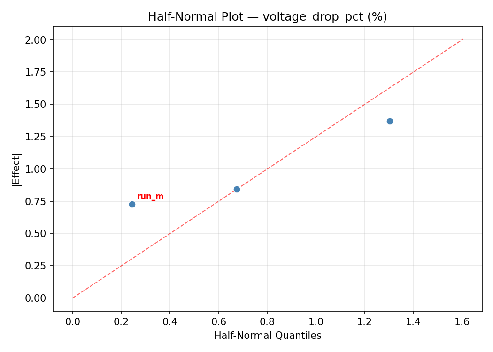
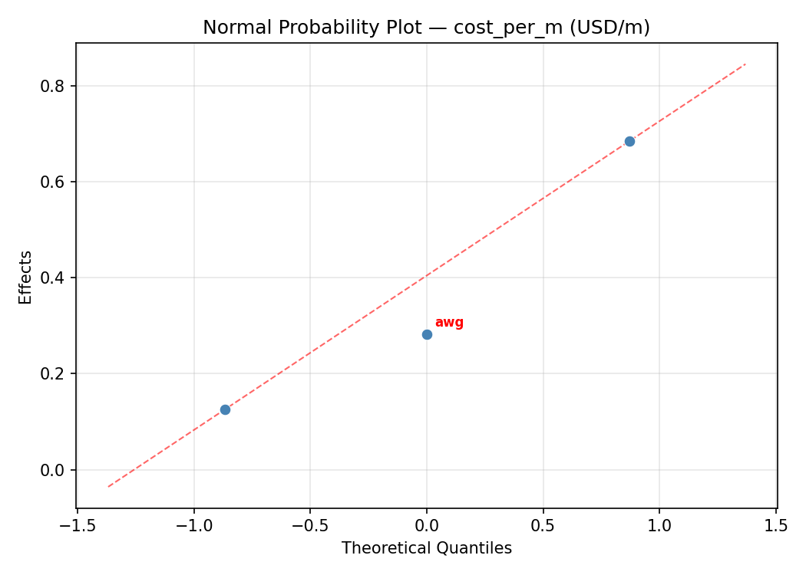

Summary
This experiment investigates wire gauge & run length. Box-Behnken design to minimize voltage drop and maximize cost efficiency by tuning wire gauge, run length, and conduit fill ratio.
The design varies 3 factors: awg (AWG), ranging from 10 to 18, run m (m), ranging from 5 to 30, and fill pct (%), ranging from 20 to 60. The goal is to optimize 2 responses: voltage drop pct (%) (minimize) and cost per m (USD/m) (minimize). Fixed conditions held constant across all runs include circuit = 20A_120V, conductor = copper.
A Box-Behnken design was chosen because it efficiently fits quadratic models with 3 continuous factors while avoiding extreme corner combinations — requiring only 15 runs instead of the 8 needed for a full factorial at two levels.
Quadratic response surface models were fitted to capture potential curvature and factor interactions. The RSM contour plots below visualize how pairs of factors jointly affect each response.
Key Findings
For voltage drop pct, the most influential factors were awg (38.2%), run m (34.1%), fill pct (27.7%). The best observed value was 1.1 (at awg = 18, run m = 5, fill pct = 40).
For cost per m, the most influential factors were awg (50.5%), run m (31.7%), fill pct (17.8%). The best observed value was 1.43 (at awg = 10, run m = 5, fill pct = 40).
Recommended Next Steps
- Run confirmation experiments at the predicted optimal settings to validate the model.
- Consider whether any fixed factors should be varied in a future study.
Experimental Setup
Factors
| Factor | Low | High | Unit |
|---|
awg | 10 | 18 | AWG |
run_m | 5 | 30 | m |
fill_pct | 20 | 60 | % |
Fixed: circuit = 20A_120V, conductor = copper
Responses
| Response | Direction | Unit |
|---|
voltage_drop_pct | ↓ minimize | % |
cost_per_m | ↓ minimize | USD/m |
Configuration
{
"metadata": {
"name": "Wire Gauge & Run Length",
"description": "Box-Behnken design to minimize voltage drop and maximize cost efficiency by tuning wire gauge, run length, and conduit fill ratio"
},
"factors": [
{
"name": "awg",
"levels": [
"10",
"18"
],
"type": "continuous",
"unit": "AWG"
},
{
"name": "run_m",
"levels": [
"5",
"30"
],
"type": "continuous",
"unit": "m"
},
{
"name": "fill_pct",
"levels": [
"20",
"60"
],
"type": "continuous",
"unit": "%"
}
],
"fixed_factors": {
"circuit": "20A_120V",
"conductor": "copper"
},
"responses": [
{
"name": "voltage_drop_pct",
"optimize": "minimize",
"unit": "%"
},
{
"name": "cost_per_m",
"optimize": "minimize",
"unit": "USD/m"
}
],
"settings": {
"operation": "box_behnken",
"test_script": "use_cases/277_wire_gauge_selection/sim.sh"
}
}
Experimental Matrix
The Box-Behnken Design produces 15 runs. Each row is one experiment with specific factor settings.
| Run | awg | run_m | fill_pct |
|---|
| 1 | 14 | 5 | 20 |
| 2 | 14 | 17.5 | 40 |
| 3 | 18 | 17.5 | 60 |
| 4 | 18 | 17.5 | 20 |
| 5 | 14 | 17.5 | 40 |
| 6 | 14 | 17.5 | 40 |
| 7 | 10 | 17.5 | 60 |
| 8 | 18 | 5 | 40 |
| 9 | 14 | 5 | 60 |
| 10 | 18 | 30 | 40 |
| 11 | 10 | 17.5 | 20 |
| 12 | 14 | 30 | 60 |
| 13 | 10 | 5 | 40 |
| 14 | 10 | 30 | 40 |
| 15 | 14 | 30 | 20 |
Step-by-Step Workflow
1
Preview the design
$ python doe.py info --config use_cases/277_wire_gauge_selection/config.json
2
Generate the runner script
$ python doe.py generate --config use_cases/277_wire_gauge_selection/config.json \
--output use_cases/277_wire_gauge_selection/results/run.sh --seed 42
3
Execute the experiments
$ bash use_cases/277_wire_gauge_selection/results/run.sh
4
Analyze results
$ python doe.py analyze --config use_cases/277_wire_gauge_selection/config.json
5
Get optimization recommendations
$ python doe.py optimize --config use_cases/277_wire_gauge_selection/config.json
6
Multi-objective optimization
With 2 competing responses, use --multi to find the best compromise via Derringer–Suich desirability.
$ python doe.py optimize --config use_cases/277_wire_gauge_selection/config.json --multi
7
Generate the HTML report
$ python doe.py report --config use_cases/277_wire_gauge_selection/config.json \
--output use_cases/277_wire_gauge_selection/results/report.html
Features Exercised
| Feature | Value |
|---|
| Design type | box_behnken |
| Factor types | continuous (all 3) |
| Arg style | double-dash |
| Responses | 2 (voltage_drop_pct ↓, cost_per_m ↓) |
| Total runs | 15 |
Analysis Results
Generated from actual experiment runs using the DOE Helper Tool.
Response: voltage_drop_pct
Top factors: awg (38.2%), run_m (34.1%), fill_pct (27.7%).
ANOVA
| Source | DF | SS | MS | F | p-value |
|---|
| Source | DF | SS | MS | F | p-value |
| awg | 2 | 4.8142 | 2.4071 | 6.172 | 0.0239 |
| run_m | 2 | 4.7524 | 2.3762 | 6.093 | 0.0247 |
| fill_pct | 2 | 3.6614 | 1.8307 | 4.694 | 0.0448 |
| Lack | of | Fit | 6 | 16.6080 | 2.7680 |
| Pure | Error | 2 | 0.7800 | | |
| Error | 8 | 17.3880 | 0.3900 | | |
| Total | 14 | 30.6160 | 2.1869 | | |
Pareto Chart

Main Effects Plot

Normal Probability Plot of Effects

Half-Normal Plot of Effects

Model Diagnostics

Response: cost_per_m
Top factors: awg (50.5%), run_m (31.7%), fill_pct (17.8%).
ANOVA
| Source | DF | SS | MS | F | p-value |
|---|
| Source | DF | SS | MS | F | p-value |
| awg | 2 | 1.2827 | 0.6414 | 155.171 | 0.0000 |
| run_m | 2 | 0.4953 | 0.2476 | 59.913 | 0.0000 |
| fill_pct | 2 | 0.1884 | 0.0942 | 22.793 | 0.0005 |
| Lack | of | Fit | 6 | 3.5229 | 0.5872 |
| Pure | Error | 2 | 0.0083 | | |
| Error | 8 | 3.5312 | 0.0041 | | |
| Total | 14 | 5.4976 | 0.3927 | | |
Pareto Chart

Main Effects Plot

Normal Probability Plot of Effects

Half-Normal Plot of Effects

Model Diagnostics

Response Surface Plots
3D surfaces fitted with quadratic RSM. Red dots are observed data points.
cost per m awg vs fill pct

cost per m awg vs run m

cost per m run m vs fill pct

voltage drop pct awg vs fill pct

voltage drop pct awg vs run m

voltage drop pct run m vs fill pct

Multi-Objective Optimization
When responses compete, Derringer–Suich desirability finds the best compromise.
Each response is scaled to a 0–1 desirability, then combined via a weighted geometric mean.
Overall Desirability
D = 0.8426
Per-Response Desirability
| Response | Weight | Desirability | Predicted | Dir |
|---|
voltage_drop_pct |
1.5 |
|
1.61 0.8674 1.61 % |
↓ |
cost_per_m |
1.0 |
|
1.72 0.8069 1.72 USD/m |
↓ |
Recommended Settings
| Factor | Value |
|---|
awg | 10 AWG |
run_m | 5 m |
fill_pct | 60 % |
Source: from RSM model prediction
Trade-off Summary
Sacrifice = how much worse than single-objective best.
| Response | Predicted | Best Observed | Sacrifice |
|---|
cost_per_m | 1.72 | 1.43 | +0.29 |
Top 3 Runs by Desirability
| Run | D | Factor Settings |
|---|
| #9 | 0.7112 | awg=18, run_m=17.5, fill_pct=60 |
| #8 | 0.6674 | awg=10, run_m=5, fill_pct=40 |
Model Quality
| Response | R² | Type |
|---|
cost_per_m | 0.6350 | quadratic |
Full Multi-Objective Output
============================================================
MULTI-OBJECTIVE OPTIMIZATION
Method: Derringer-Suich Desirability Function
============================================================
Overall desirability: D = 0.8426
Response Weight Desirability Predicted Direction
---------------------------------------------------------------------
voltage_drop_pct 1.5 0.8674 1.61 % ↓
cost_per_m 1.0 0.8069 1.72 USD/m ↓
Recommended settings:
awg = 10 AWG
run_m = 5 m
fill_pct = 60 %
(from RSM model prediction)
Trade-off summary:
voltage_drop_pct: 1.61 (best observed: 1.10, sacrifice: +0.51)
cost_per_m: 1.72 (best observed: 1.43, sacrifice: +0.29)
Model quality:
voltage_drop_pct: R² = 0.6757 (quadratic)
cost_per_m: R² = 0.6350 (quadratic)
Top 3 observed runs by overall desirability:
1. Run #1 (D=0.7965): awg=18, run_m=17.5, fill_pct=20
2. Run #9 (D=0.7112): awg=18, run_m=17.5, fill_pct=60
3. Run #8 (D=0.6674): awg=10, run_m=5, fill_pct=40
Full Analysis Output
=== Main Effects: voltage_drop_pct ===
Factor Effect Std Error % Contribution
--------------------------------------------------------------
awg 1.5250 0.3818 38.2%
run_m 1.3607 0.3818 34.1%
fill_pct 1.1071 0.3818 27.7%
=== ANOVA Table: voltage_drop_pct ===
Source DF SS MS F p-value
-----------------------------------------------------------------------------
awg 2 4.8142 2.4071 6.172 0.0239
run_m 2 4.7524 2.3762 6.093 0.0247
fill_pct 2 3.6614 1.8307 4.694 0.0448
Lack of Fit 6 16.6080 2.7680 7.097 0.1286
Pure Error 2 0.7800 0.3900
Error 8 17.3880 0.3900
Total 14 30.6160 2.1869
=== Summary Statistics: voltage_drop_pct ===
awg:
Level N Mean Std Min Max
------------------------------------------------------------
10 4 2.4000 1.7068 1.1000 4.9000
14 7 3.3714 0.8240 2.3000 4.7000
18 4 3.9250 2.0807 1.6000 6.4000
run_m:
Level N Mean Std Min Max
------------------------------------------------------------
17.5 7 3.7857 1.4781 2.0000 6.4000
30 4 2.4250 1.5945 1.1000 4.7000
5 4 3.1750 1.3074 1.6000 4.7000
fill_pct:
Level N Mean Std Min Max
------------------------------------------------------------
20 4 3.8500 1.1030 2.8000 4.9000
40 7 2.7429 1.3673 1.1000 4.7000
60 4 3.5750 2.0073 2.0000 6.4000
=== Main Effects: cost_per_m ===
Factor Effect Std Error % Contribution
--------------------------------------------------------------
awg 0.6800 0.1618 50.5%
run_m 0.4261 0.1618 31.7%
fill_pct 0.2396 0.1618 17.8%
=== ANOVA Table: cost_per_m ===
Source DF SS MS F p-value
-----------------------------------------------------------------------------
awg 2 1.2827 0.6414 155.171 0.0000
run_m 2 0.4953 0.2476 59.913 0.0000
fill_pct 2 0.1884 0.0942 22.793 0.0005
Lack of Fit 6 3.5229 0.5872 142.053 0.0070
Pure Error 2 0.0083 0.0041
Error 8 3.5312 0.0041
Total 14 5.4976 0.3927
=== Summary Statistics: cost_per_m ===
awg:
Level N Mean Std Min Max
------------------------------------------------------------
10 4 2.6525 0.8095 1.4500 3.2100
14 7 2.0029 0.5890 1.4300 3.2100
18 4 1.9725 0.2361 1.6700 2.2300
run_m:
Level N Mean Std Min Max
------------------------------------------------------------
17.5 7 2.0414 0.5596 1.4500 3.2100
30 4 2.0900 0.6208 1.4700 2.9500
5 4 2.4675 0.8099 1.4300 3.2100
fill_pct:
Level N Mean Std Min Max
------------------------------------------------------------
20 4 2.0475 0.8250 1.4500 3.2100
40 7 2.2871 0.4821 1.9200 3.0000
60 4 2.0800 0.7900 1.4300 3.2100
Optimization Recommendations
=== Optimization: voltage_drop_pct ===
Direction: minimize
Best observed run: #13
awg = 18
run_m = 5
fill_pct = 40
Value: 1.1
RSM Model (linear, R² = 0.5657, Adj R² = 0.4473):
Coefficients:
intercept +3.2600
awg -0.9500
run_m +0.4000
fill_pct +1.0500
RSM Model (quadratic, R² = 0.7016, Adj R² = 0.1646):
Coefficients:
intercept +2.6000
awg -0.9500
run_m +0.4000
fill_pct +1.0500
awg*run_m -0.5750
awg*fill_pct -0.2250
run_m*fill_pct -0.0750
awg^2 +0.0125
run_m^2 +0.5625
fill_pct^2 +0.6625
Curvature analysis:
fill_pct coef=+0.6625 convex (has a minimum)
run_m coef=+0.5625 convex (has a minimum)
awg coef=+0.0125 negligible curvature
Notable interactions:
awg*run_m coef=-0.5750 (antagonistic)
Predicted optimum (from linear model, at observed points):
awg = 10
run_m = 17.5
fill_pct = 60
Predicted value: 5.2600
Surface optimum (via L-BFGS-B, linear model):
awg = 18
run_m = 5
fill_pct = 20
Predicted value: 0.8600
Model quality: Moderate fit — use predictions directionally, not precisely.
Factor importance:
1. fill_pct (effect: 2.1, contribution: 42.7%)
2. awg (effect: 1.9, contribution: 38.7%)
3. run_m (effect: 0.9, contribution: 18.6%)
=== Optimization: cost_per_m ===
Direction: minimize
Best observed run: #8
awg = 10
run_m = 5
fill_pct = 40
Value: 1.43
RSM Model (linear, R² = 0.2993, Adj R² = 0.1083):
Coefficients:
intercept +2.1680
awg +0.1825
run_m -0.1200
fill_pct -0.3975
RSM Model (quadratic, R² = 0.4978, Adj R² = -0.4060):
Coefficients:
intercept +1.9700
awg +0.1825
run_m -0.1200
fill_pct -0.3975
awg*run_m -0.0475
awg*fill_pct +0.2525
run_m*fill_pct +0.3225
awg^2 +0.3237
run_m^2 -0.0312
fill_pct^2 +0.0788
Curvature analysis:
awg coef=+0.3237 convex (has a minimum)
fill_pct coef=+0.0788 negligible curvature
run_m coef=-0.0312 negligible curvature
Notable interactions:
run_m*fill_pct coef=+0.3225 (synergistic)
Predicted optimum (from linear model, at observed points):
awg = 18
run_m = 17.5
fill_pct = 20
Predicted value: 2.7480
Surface optimum (via L-BFGS-B, linear model):
awg = 10
run_m = 30
fill_pct = 60
Predicted value: 1.4680
Model quality: Weak fit — consider adding center points or using a different design.
Factor importance:
1. fill_pct (effect: 0.8, contribution: 51.7%)
2. awg (effect: 0.5, contribution: 32.7%)
3. run_m (effect: 0.2, contribution: 15.6%)